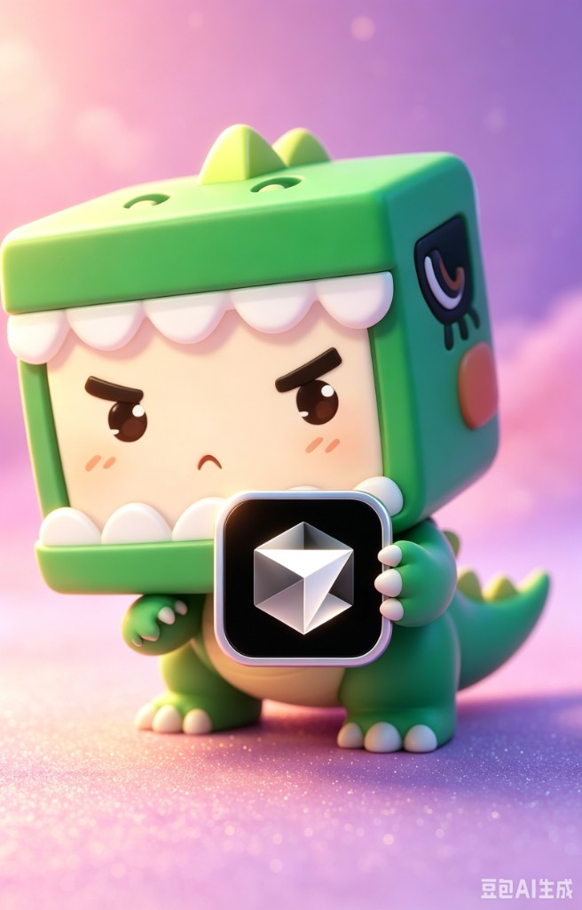

总览
管理 Cursor 主题、光标与安装路径
就绪
MINI WORLD × CURSOR
一键换肤，随时还原
内置迷你世界毛玻璃主题，支持主题市场扩展。指定 Cursor 安装路径后即可安全注入与恢复。

当前主题
—
当前光标
—
主题包数量
0
Cursor 路径
—
快捷操作
光标商店
先内置能量剑，后续更新可继续扩展更多指针包
提示
光标热点已对齐刀尖。应用后请在 Cursor 执行 Developer: Reload Window。
将检测 workbench.html 是否存在
默认指向迷你世界主题系统（含 Apply / Inject / Disable 脚本）
Cursor Theme Studio
开源主题管理器。内嵌迷你世界主题，支持主题包扩展与光标市场。
- 主题包格式：
themes/<id>/theme.json - 通过 PowerShell 脚本安全注入 / 还原 Cursor UI
- MIT License — 欢迎贡献新主题包